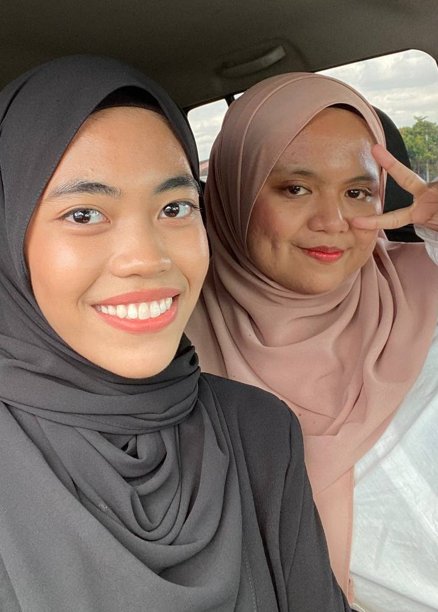
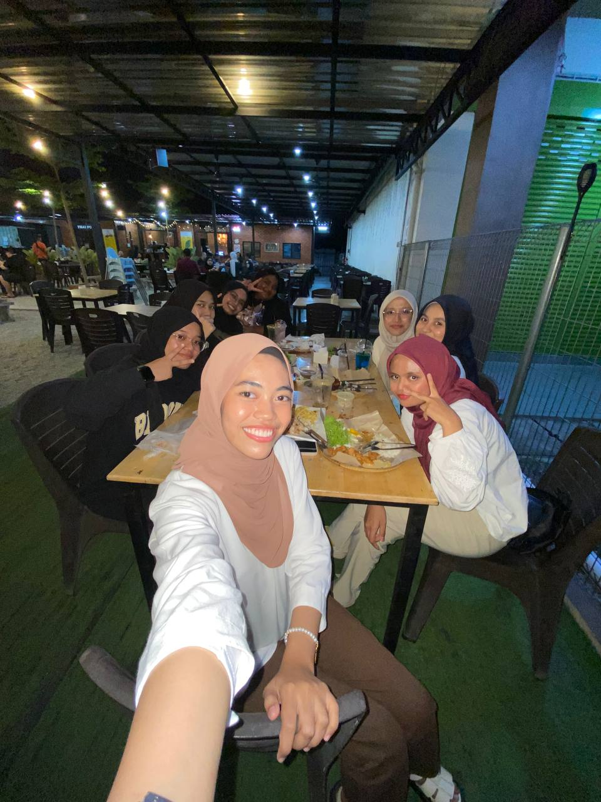

Choose quality over quantity !
Friends in UiTM
 The first picture was me and my best friend in UiTM, Balqis Nasuha. We have known each other since semester 1 (2021) until last semester (2023). We always share our stories and always do assignments together. Since we have known a long time, many struggles me and Balqis have faced. Every semester, we always supports each other to continue the study even though sometimes we want to give up on ur studies.
The second picture was me and my classmates. We have been classmates since semester 1. Our class was very helpful to each other towards anyone. It was a great experience for me to knew them in my study journey in Diploma. I hope that me and my classmate never forget each other until we grow old.